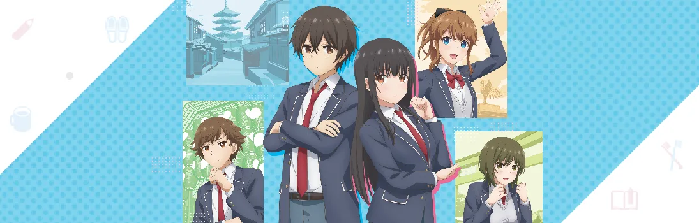

Дочь моей мачехи — моя бывшая девушка
Mamahaha no Tsurego ga Motokano datta
О, этот нежный трепет вначале романтических отношений... И какой же неприятный осадок остаётся после расставания! Особенно когда разрыв произошёл на фоне ссор и скандалов.
У Иридо Мидзуто и Айя Юмэ именно так всё и сложилось.
Однако, в отличие от своих детей, родители-одиночки горячо полюбили друг друга и скрепили свой союз узами брака. (Вот так сюрприз!)
Теперь Мидзуто и Юмэ вынуждены жить вместе в новоиспечённом семейном гнёздышке и отыгрывать роли сводных брата и сестры.
Сможет ли бывшая парочка оставить всё в прошлом и побороть взаимную неприязнь? А может совместный быт разбудит былые чувства..?
Сезон:
Лето, 2022
Возрастной рейтинг:
16+
Эпизоды:
0 / 12
Статус:
В работе
Жанры:
Романтика, Комедия, Повседневность, Школа, Сёнен